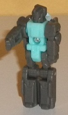
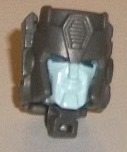
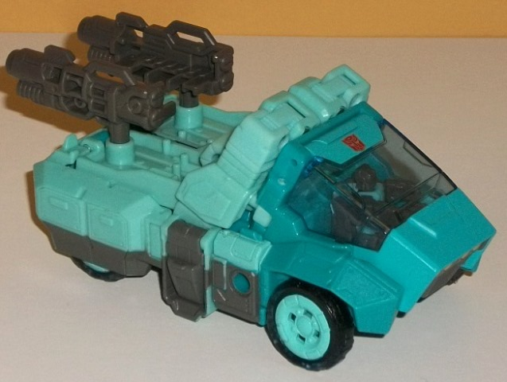
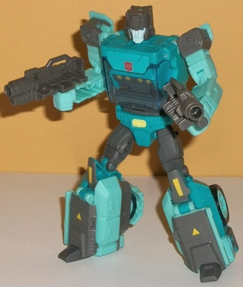

Allegiances
: Autobot
Size
: Deluxe
Difficulty of Transformation
: Medium
Color Scheme
: Dark gray, light pale
teal, moderately dark aquamarine, and some yellow, dark pale metallic blue,
and transparent blue
Rating
: 9.4


Flintlock is the name
of Kup's Head/Titan Master, and apparently is based on Kup's Marvel comics
look according to the TFWiki, but... I don't see it. Most of the mold detailing
just looks like your average -Master from the latter half of G1; he's got
fairly straightforward rectangular detailing on the legs, a blocky detail
in the center of the chest, regular hands molded into the inside of the
arm pieces, and a headsculpt that looks like nearly every -Master toy from
G1, what with a visor, a regular mouth, flat side antennae, and a small
bit sticking out from the center of the forehead. Unfortunately the color
scheme is pretty dull too, as Flintlock is mostly all dark gray with a
pale teal body; there's no paint apps at all to bring out any of those
details. As with all Titan Masters, Flintlock can move back-and-forth at
the hips and knees (as one, each leg is bolted together), as well as limited
ball movement at the neck and shoulders. In head mode, Flintlock certainly
looks like Kup; he's got a fairly rectangular head with a vent on the middle
of the forehead, minor side antennae, little circular "ear buds" on the
sides, and a slightly grumpy expression. The face is painted light pale
teal, and the eyes are a nice dark pale metallic blue. The sculpt of the
face itself is a bit... off, though. The lips are a bit too large, and
overall the front section just looks a bit too flat. It's still okay, but
it's not the best of the line's headsculpts, that's for sure.


Unlike the
previous
version
of Generations Kup, this version is much more of a strict G1
update (as seems to be the trend nowadays). As opposed to a modern truck,
Kup is more of a made-up futuristic pickup truck. He's got an angular,
sloped cab, with again angular portions on the back that are supposed to
be the pickup "bed", even though the bed is just as high as the rim of
the truck around it (though to be fair, it was like this on the G1 toy
as well). The front wheels are uncovered, while the rear wheels are mostly
covered except for the very bottom. There is one fairly obvious robot mode
extra in this mode, and that's the robot fists sticking up from the front
of the truck bed. In fact, the whole arms there are quite obviously folded
up, but at least the arms as a whole fit into Kup's silhouette. Otherwise,
no robot mode extras at all, which is great. The mold detailing is sleek
in some parts to make the truck mode "futuristic", but a bit more detailed
in others-- he's got armor panel lining the sides of the front wheel rims,
what looks like storage bins above his rear wheels, the usual lines on
the truck bed, and then a rear end complete with molded-in taillights (none
of the taillights are painted, unfortunately). The color scheme is pretty
much classic Kup-- pretty much all light pale teal on the back two-thirds
with a darker aquamarine for the cab. The two colors complement each other
as well as contrast given the difference in light/darkness, so it's a decent
choice. There's also some dark gray that's used mostly on the bottom sides
of the truck bed, as well as the front grill, and of course the wheels
are mostly black plastic. There's some yellow on the front grill, but that's
all it's used in this mode-- it's unfortunate, as the truck bed and rear
bumper could really use something to break up all that teal. The transparent
blue window can flip up and you can sit a Titan Master comfortably in there,
and there's SIX pegs on the truck bed for more Titan Masters to stand on.
There's also holes on the truck bed for Kup's two gray guns, which can
also plug into the sides of this mode as well. (Like many Titan Master
guns, the two can combine together for another Titan Master to sit in.)
Kup's transformation
is absolutely ingenious-- it accomplishes a lot with not many steps, with
the legs turning themselves inside out pretty solidly and the front section
crumples together to form the chest. I mean, it's hard to find anything
wrong with Kup's robot mode. The proportions are pretty spot-on everywhere.
There's just a BIT of extra little truck bits behind his gray shoulders,
but otherwise everything looks solid-- no extras, not even a minor backpack!
There's also a lot of new bits revealed in this mode, what with the waist,
upper legs, and lower leg panels all flipped around. He's got horizontal
lines across the lower legs, with yellow triangle bits and yellow bits
on the knees, as well. The "belt" detailing on the waist is great, and
has some additional yellow detailing on the "buckle". The gray is definitely
more prevalent in this mode, with paint on the lower legs and knees, as
well as present in the interior chest bits, upper legs, and on the shoulders.
The dark aquamarine is also more prevalent, as the entire main body and
about half of the legs are that color, so this mode doesn't have the problem
with too much of one unbroken color that the other does. I do wish the
fists were a different color, as having them teal looks too bland, but
on the other hand this would make them more obvious in truck mode, so I
guess it's a wash. It should be worth noting that Kup's guns can also be
stored on his upper back and on the sides of his lower legs in addition
to him being able to hold them in his hands. For articulation, Kup can
move at the neck, shoulders (at two points), elbows (at three points),
outwards slightly at the wrists, rotation at the waist, and movement at
the hips and knees (at two points). Given how well he's balanced and with
no extras, he's VERY poseable.
Titans Return Kup is
just a stellar toy all-around, as long as you don't mind futuristic alt
modes. He's quite accurate to the cartoon in both modes, and although he
could use some more paint in alt mode, he's practically extra-free, very
proportional, he's got a satisfying transformation, and has a TON of articulation
and poseability in robot mode. If you want a G1-y update of Kup, I mean...
outside of a Masterpiece, I don't see how they could get much better than
this. Highly recommended.
Review by Beastbot